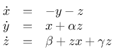
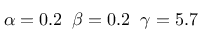
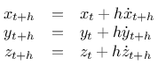
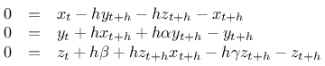
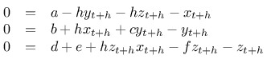
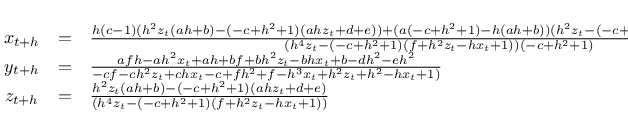

Updates
Nachdem ich so viel Spaß bei der Untersuchung der Behandlung eines chaotischen Systems mittels impliziten Eulerverfahrens hatte, habe ich mir gleich noch eines vorgenommen...
Der Rössler-Attractor stellt sich wie folgt dar:

mit
Daraus folgt für die Behandlung mit dem impliziten Eulerverfahren und einer Schrittweite (oder Intervallänge) h:
und eingesetzt:
Und wegen der Übersichtlichkeit:
Löst man dieses Gleichungssystem - und ich gebe zu, dass ich mich außerstande sah und Hilfe bei SymPy gesucht habe - kommt man auf ein Ergebnis für die Berechnung der drei Zustandsgrößen, das auf der Konsole - direkt von SymPy - wie folgt aussieht:from sympy import *
>>> from sympy import *
>>> x, y, z,a,b,c,d,e,f,h = symbols('x, y, z,a,b,c,d,e,f,h')
>>> linsolve([a-h*y-h*z-x,b+h*x+c*y-y,d+e+h*z*x-f*z-z],(x,y,z))
{((h*(c - 1)*(h**2*z*(a*h + b) - (-c + h**2 + 1)*(a*h*z + d + e)) +
(a*(-c + h**2 + 1) - h*(a*h + b))*(h**4*z -
(-c + h**2 + 1)*(f + h**2*z - h*x + 1)))/((h**4*z -
(-c + h**2 + 1)*(f + h**2*z - h*x + 1))*(-c + h**2 + 1)),
(a*f*h - a*h**2*x + a*h + b*f + b*h**2*z - b*h*x + b -
d*h**2 - e*h**2)/(-c*f - c*h**2*z + c*h*x - c + f*h**2 + f -
h**3*x + h**2*z + h**2 - h*x + 1), (h**2*z*(a*h + b) -
(-c + h**2 + 1)*(a*h*z + d + e))/(h**4*z -
(-c + h**2 + 1)*(f + h**2*z - h*x + 1)))}
>>>
Eindrucksvoll und dennoch verwirrend - daher habe ich es hier nochmal aufbereitet:

Die hier gezeigten Darstellung veranschaulichen den Vorteil des impliziten Eulerverfahrens noch einmal schön: Als Referenz habe ich den Rösslerattractor mit einem adaptiven, expliziten Cash-Karp-Solver bis zu t=100 berechnet. Das benötigte 10000 Schritte - damit war die optimale durchschnittliche Schrittweite mit h=0.03 ermittelt.
Daraufhin berechnete ich zunächst das System mit dem expliziten Eulerverfahren und unterschiedlichen Schrittweiten bis zu t=30. Die Darstellungen zeigen die Änderungen im Ergebnis für h= 0.03, h=0.04 und h=0.05. Man kann erkennen, dass bereits bei h=0.04 eine Degeneration einsetzt (die Spiralfeder) und schließlich bei h=0.05 schließlich keine Lösung mehr ermittelt werden kann.
Die beiden letzten Bild stellen das Ergebnis des impliziten Verfahrens mit einer Schrittweite von h=0.04 und h=0.05 dar - in beiden sieht man, dass die beim expliziten Verfahren mit h=0.04 beobachtete Degeneration auch hier vorliegt, allerdings wird auch deutlich, dass die Lösung qualitativ noch sehr nahe am Original liegt. Damit ist einmal mehr bewiesen, dass man sich für die numerische Lösung von Differentialgleichungssystemen der Mühe unterziehen sollte, das implizite Eulerverfahren zumindest in Betracht zu ziehen.
Aktualisierung vom 26. Februar 2020
Screenshots
{kind=link}
{kind=link}
{kind=link}
{kind=link}
{kind=link}
{kind=link}
Artikel, die hierher verlinken
Synchronisierung von Roessler-Systemen
03.11.2020
Nachdem ich ein wenig mit der Synchronisation von Lorenz-Systemen herumgespielt habe wollte ich herausfinden, ob sich die gefundenen Ergebnisse auf andere Systeme übertragen lassen - mein erster Kandidat dafür war das Roessler-System.
Bifurkationen im Lorenz-System
10.05.2020
Nachdem ich hier schon einmal kurz über Bifurkationen und Lyapunov-Exponenten berichtet habe, habe ich den Code dafür aufgeräumt und flexibilisiert - nun kann ich diese Werkzeuge auf beliebige Systeme anwenden: Das erste Beispiel war ja das Roessler-System, jetzt habe ich sie auf das Lorenz-System angewendet.
Mathematik mit beliebiger Präzision in Java
11.11.2018
Wann immer ich hier über Experimente mit numerischen Lösungsverfahren für Differentialgleichungssysteme berichte, habe ich im Hinterkopf, dass diese Verfahren eigentlich völlig ungeeignet dafür sind, solche Systeme zu analysieren, da heutige Digitalcomputer bereits rationale Zahlen nicht exakt darstellen können - von irrationalen ganz zu schweigen...


Vor 5 Jahren hier im Blog
-
Streaming Server mit Linux
17.08.2019
Ich habe schon länger darüber nachgedacht, einmal zu versuchen, einen Streaming-Server aufzubauen. Da es in letzter Zeit wieder einmal sehr war draußen ist, habe ich die Zeit, die ich vor der Hitze Schutz suchte dazu genutzt, diese Idee in die Praxis umzusetzen...
Weiterlesen...
Tags
Android Basteln C und C++ Chaos Datenbanken Docker dWb+ ESP Wifi Garten Geo Git(lab|hub) Go GUI Gui Hardware Java Jupyter Komponenten Links Linux Markdown Markup Music Numerik PKI-X.509-CA Python QBrowser Rants Raspi Revisited Security Software-Test sQLshell TeleGrafana Verschiedenes Video Virtualisierung Windows Upcoming...
Neueste Artikel
- Futro s920 Booten übers Netz
Ich habe hier bereits von den Anfängen meiner Versuche berichtet, Ersatz für die Raspis und vergleichbarer Hardware zu finden.
Weiterlesen... - LinkCollections 2024 VI
Nach der letzten losen Zusammenstellung (für mich) interessanter Links aus den Tiefen des Internet von 2024 folgt hier gleich die nächste:
Weiterlesen... -
 Online Werkzeuge
Online Werkzeuge
Eine Liste interessanter Werkzeuge zur Benutzung "on the road"...
Weiterlesen...
Manche nennen es Blog, manche Web-Seite - ich schreibe hier hin und wieder über meine Erlebnisse, Rückschläge und Erleuchtungen bei meinen Hobbies.
Wer daran teilhaben und eventuell sogar davon profitieren möchte, muß damit leben, daß ich hin und wieder kleine Ausflüge in Bereiche mache, die nichts mit IT, Administration oder Softwareentwicklung zu tun haben.
Ich wünsche allen Lesern viel Spaß und hin und wieder einen kleinen AHA!-Effekt...
PS: Meine öffentlichen GitHub-Repositories findet man hier - meine öffentlichen GitLab-Repositories finden sich dagegen hier.